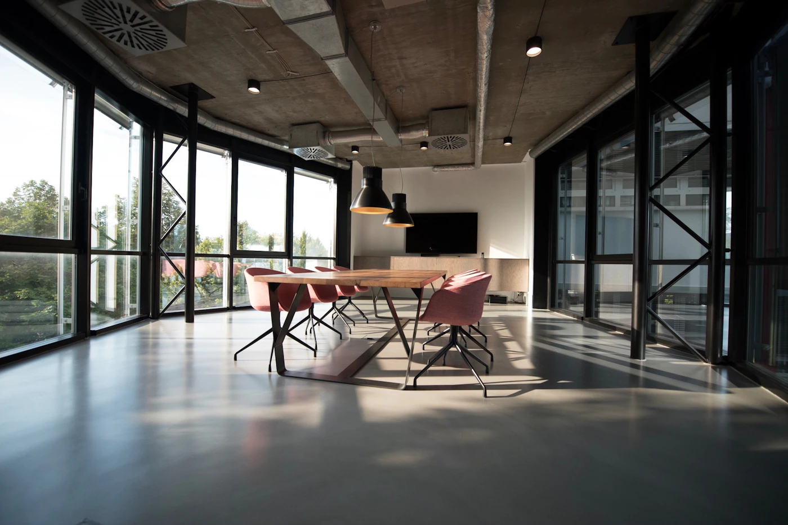

Direito civil
Relações privadas, obrigações e questões patrimoniais.
Escuta atenta, análise cuidadosa e diálogo. Uma proposta de advocacia que começa por compreender cada contexto.
Conheça as áreas de atuaçãoProjeto de um escritório fictício.
Conteúdo institucional, sem prestação de serviços jurídicos.

Escuta.
Contexto.
Responsabilidade.
Almeida & Associados é uma marca fictícia criada para demonstrar uma presença digital institucional. A proposta coloca informação acessível e comunicação responsável no centro da experiência.
Em um escritório real, a análise de documentos e circunstâncias individuais orientaria o atendimento. Esta página não oferece orientação jurídica e não substitui uma consulta profissional.
Exemplos de organização de conteúdo institucional. Não representam serviços disponíveis.
Relações privadas, obrigações e questões patrimoniais.
Informações sobre relações familiares e seus aspectos jurídicos.
Organização de empresas, contratos e relações societárias.
Relações de trabalho, direitos e responsabilidades.
Questões relacionadas a imóveis e instrumentos contratuais.
Relações de consumo e informação sobre seus aspectos legais.
Entender a história, as dúvidas e o que precisa ser esclarecido.
Apresentar etapas e possibilidades com linguagem compreensível.
Tratar cada situação com discrição, sem prometer resultados.
Equipe inteiramente fictícia. Não há profissionais inscritos, títulos acadêmicos ou números de OAB representados nesta demonstração.
Personagem fictícia · relações civis e familiares
Personagem fictício · contexto empresarial
Personagem fictícia · relações de trabalho
Algumas respostas sobre esta experiência demonstrativa.
Não. Almeida & Associados, sua equipe e toda a identidade são fictícios. A página demonstra um site institucional desenvolvido por Elias Arruda.
Não. Esta página não realiza atendimento jurídico. Para uma situação concreta, procure um profissional habilitado pelos canais reais de sua escolha.
Em uma aplicação real, o formulário encaminharia uma solicitação ao escritório. Nesta demo, a validação acontece localmente e nenhum dado é enviado.
Não. Não inclua documentos, informações pessoais sensíveis ou detalhes confidenciais nesta demonstração.
Teste a experiência de contato institucional. Os campos validam informações no navegador, sem transmissão de dados.
Alameda dos Livros, 240 · Centro
Endereço fictício
Segunda a sexta · 9h às 18h
Horário ilustrativo